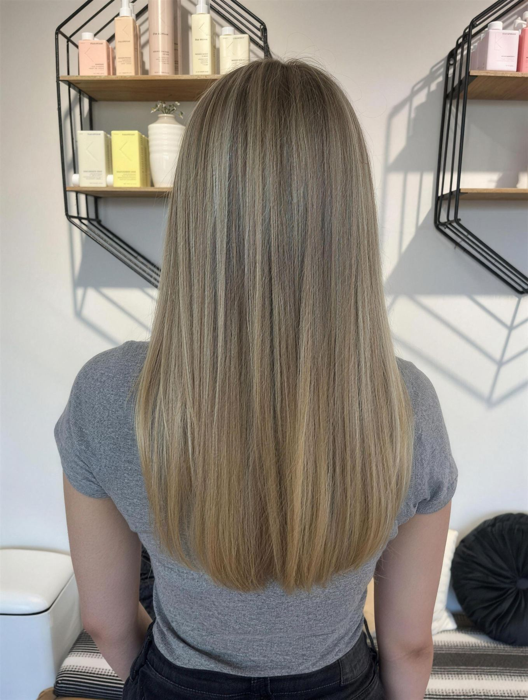
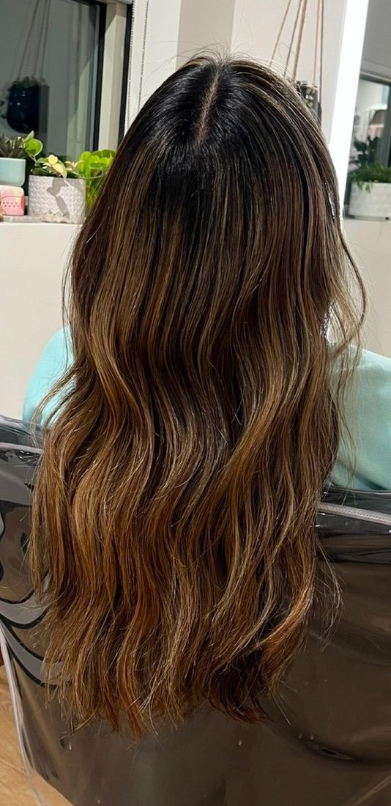
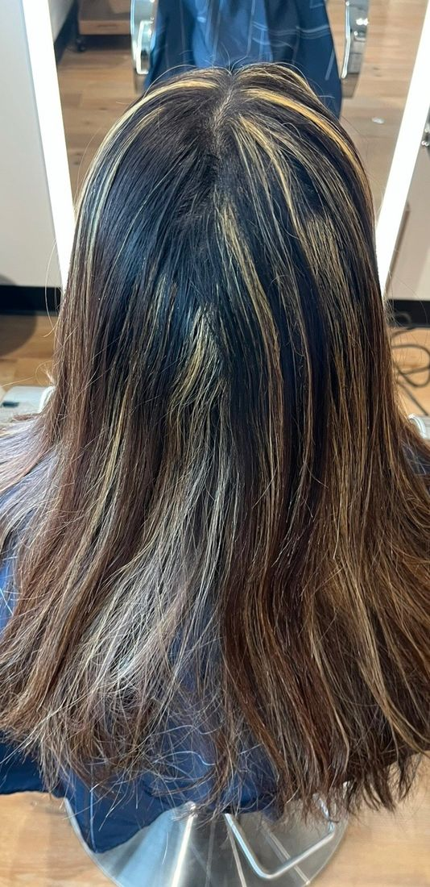
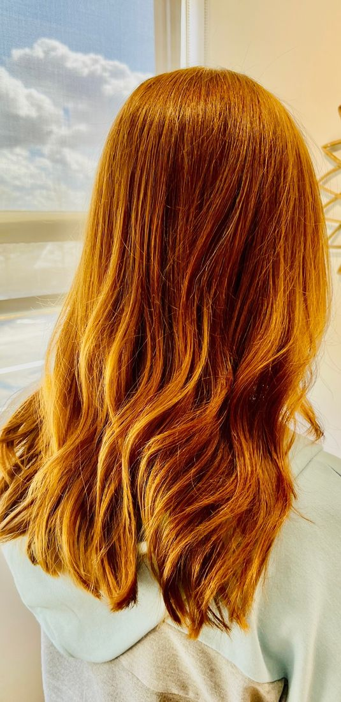
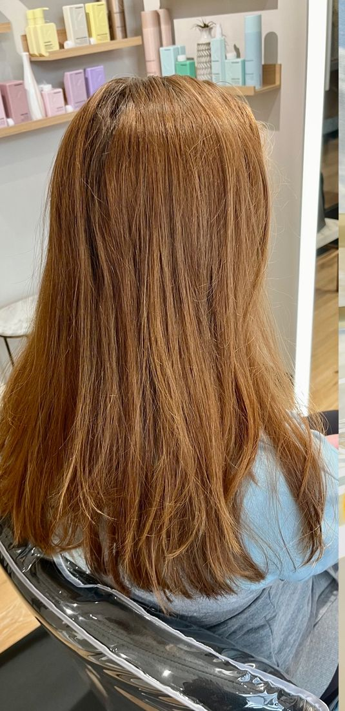

Brandie’s recent work
Color, cuts and highlights by Brandie Ryan at Looking Glass Salon. Real photos from her chair.

Before and after
Drag the line across each photo to compare.


BeforeAfter

BeforeAfter